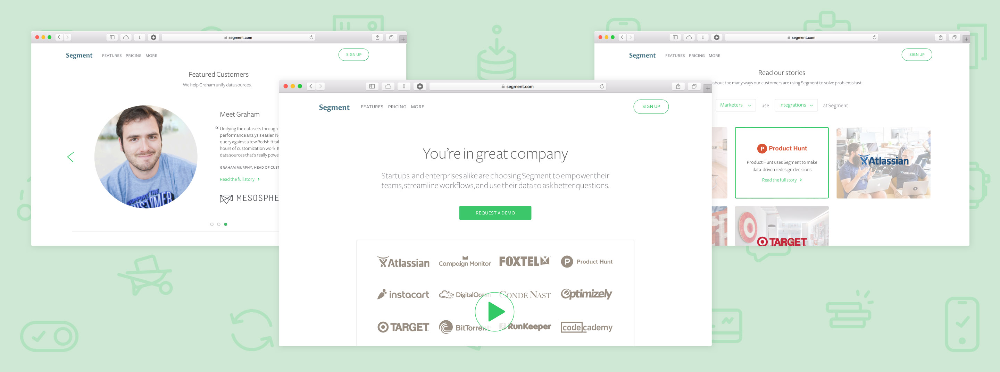
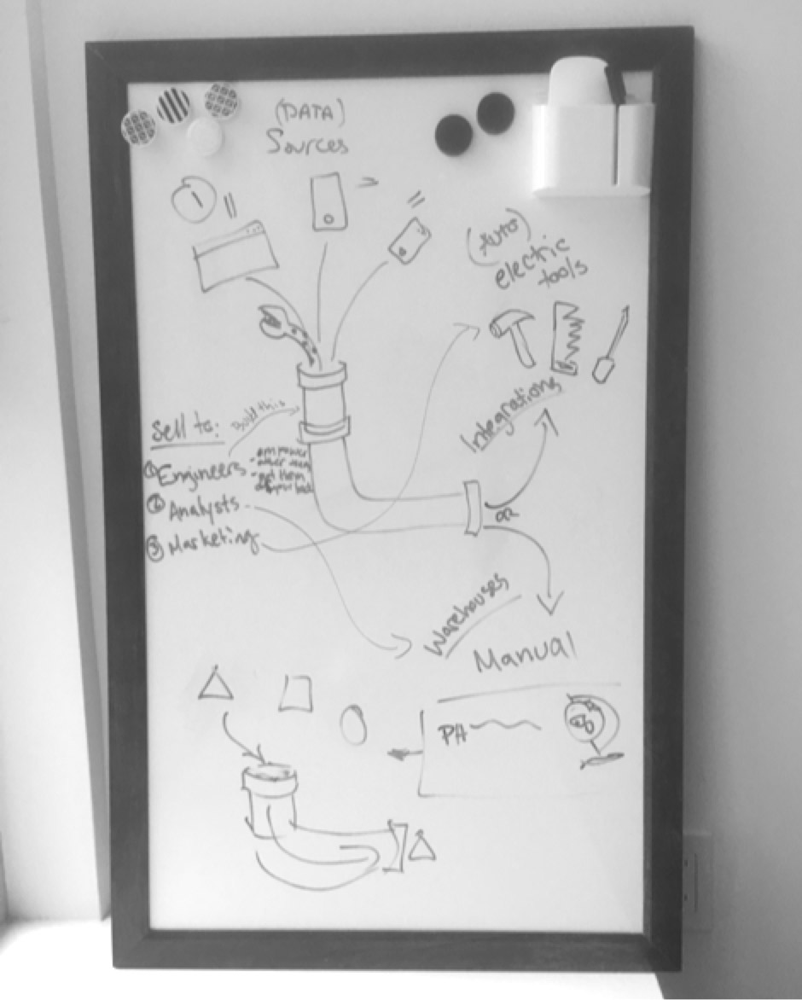
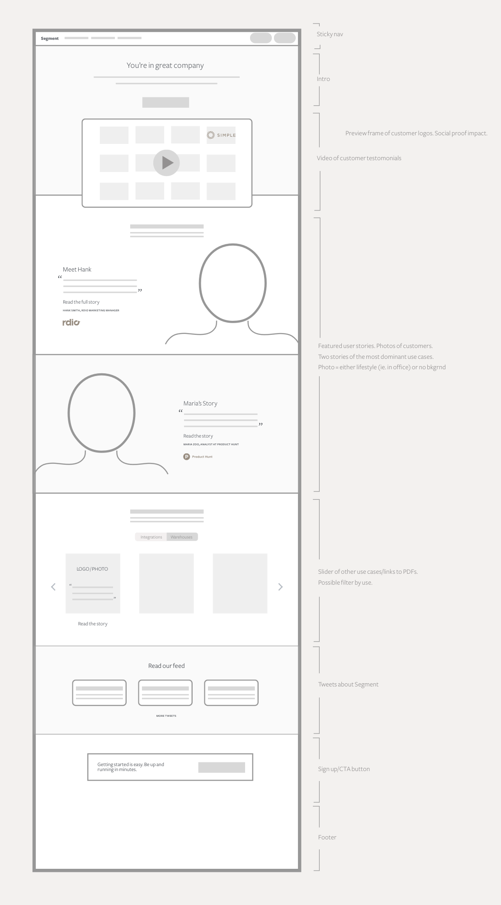
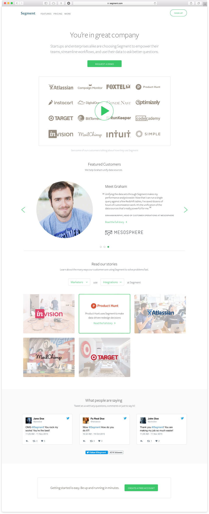
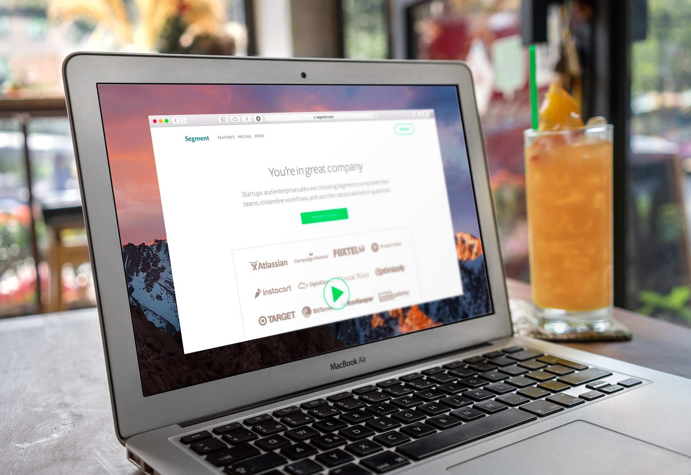

Segment Customers Page

Defining the problem
Goals
- Increase the number of people contacting the sales team for a demo without increasing the number of unqualified leads.
- Help customers feel confident and safe in choosing Segment.
- Create a scalable system for marketing to add more case studies in the future.
- Improve the visual quality of the page and improve the hierarchy of information (perceived value).
Audience
The main audience for this page are potential enterprise customers; usually Product Managers, Marketing Managers, or C-level executives.

Research and wireframing

What does Segment help people do?
First, I had to better understand who Segment could be for and how they help each use case. I spent time whiteboarding Segment features and my thoughts about how we could phrase the story.
Key steps:
- Sketching and whiteboarding to dive deep and explore.
- Researching other pages for inspiration.
- Wireframing to easily get sign-off on high-level concepts without being too concerned about aesthetics.
- Defining the story for the page and determine the content and copy we would need to source.
Discoveries
From sketching and wireframing, a couple more problems were made clear. A wall of logos was contributing to making the page long, boring, and stunted the flow of the story. I also found that cohesive, large images were hard to source. If we wanted a particular imagery style, I’d have to reshoot or choose another solution.
Balancing Constraints
Because marketing and UX can often have very different success metrics, I wanted to make sure that both teams felt accounted for and were excited about the end result. This began in the wireframe. I made sure everyone was happy with the direction here, before moving to visuals, so we could progress quicker.
Initially, I really wanted to highlight the users in a direct way by adding large profile imagery for the featured stories. This posed a problem when we were unable to attain cohesive imagery from several different customers and time constraints prevented us from capturing this imagery ourselves.
To compromise, and still maintain a user centric design, I adjusted the imagery back to a circular avatar they used elsewhere throughout the site, but made it more dominant within the section. I also focused on the copy. Phrases like “Meet Olga” and “You’re in great company” were ideas I implemented to speak more directly to the user.
In doing so, I am seeking to present current customers in a relatable, friendly way rather than solely as a selling point to add to a list.
Social Proof
Social proof tends to visually translate to a list of logos from a variety of recognizable or reputable companies that use and like you. It’s crucial to show, but how can we share this in a more appealing way?
A solution I was really excited about was within the preview frame of Segment’s video. It’s still the first thing you see and a quick list, but it reveals the people behind those brands and companies once you click “Play.”

Final design

Keeping it human
As a potential customer, I need to know why I should invest in Segment. What other big companies have already done so? What it could potentially do for me? I also need to relate to the other customers that use it. Are their pain points similar to mine?
We began to talk about the difference between a case study and a customer story. I wanted to better represent the feeling of relief and support Segment provides by enabling teams to track and anaylize data easily.
One way I sought to accomplish this was by more prominently focusing on the faces of their customers. You can hear their tone in the video, but I also wanted to continue this tone throughout the page. I added images of customer offices as well to establish a fuller sense of the story; where these users are going daily.
Finding a story that relates to you
The “Read our stories” section was meant to scale and eventually include a large number of customer stories. Marketing wanted to have a place to add more customer stories over time.
With a large list of tiles here, it may be easy to gloss over this section and not find something relevant to you. I wanted to be able to filter them by audience type and product feature so users could find something even if there were 20 or 30 stories.
Summary
These are the solutions that shaped the final design:
- Customer stories so that people would want to read it
- Wall of logos in the video
- Large, circular avatar imagery
- Filtered section of stories to account for large amount of content and multiple types of users (audience).
- Humanize by creating fuller story through imagery and tone
I sought to implement ideas that would achieve our goals in an efficient way. I’m looking forward to collecting data to see if we can better meet our balanced metric.
